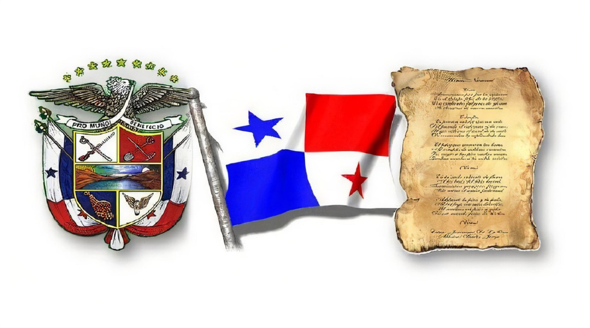
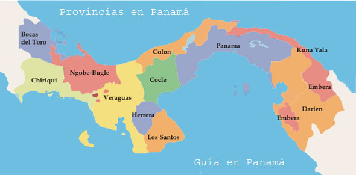
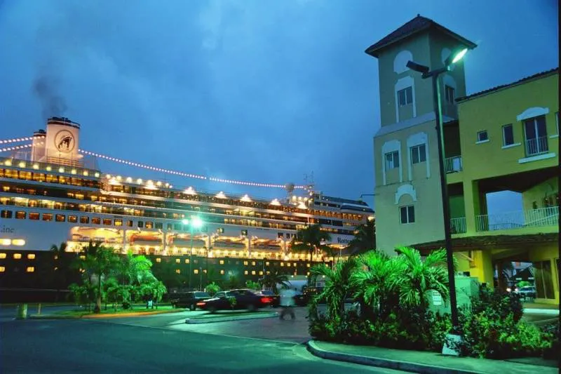

Panama
Simbolos patrios

HISTORIA
El antiguo poblado indígena se conformaba por los chocoes al sur, los caribes al este, y los ehibehas que habitaban las tierras altas del oeste. Rodrigo de Bastidas, fue el primer europeo que transitó la costa panameña. En el cuarto viaje de Cristóbal Colón, desembarcó en 1502 en el puerto natural de Portobelo, visitó el área occidental del istmo, a la que le puso por nombre Veragua, e intentó fundar en ella una colonia llamada Santa María de Belén, que al tiempo tuvo que ser abandonada. En el año 1510, Diego de Nicuesa se instituyó en nombre de Dios, y Vasco Nuñez de Balboa, con los remanentes de la expedición de Ojeda, instauró Santa María de la Antigua de Darién, el primer poblado permanente en el continente americano. Panamá fue destruida en su totalidad en 1671, por el pirata de origen ingles Henry Morgan y sus secuaces alrededor de 1500 piratas asesinos. Quienes ultrajaron y asesinaron todo lo que había a su paso. Hecho que terminó en un incendio que destruyó la ciudad y dió origen a que esta fuese mudada a otra localidad y las ruinas se convirtieran en lo que hoy es Panamá La Vieja declarada patrimonio de humanidad a partir de 1997.
Extensión territorial:
75 517 km²Lista de departamentos:
Lugares turísticos más importantes:
